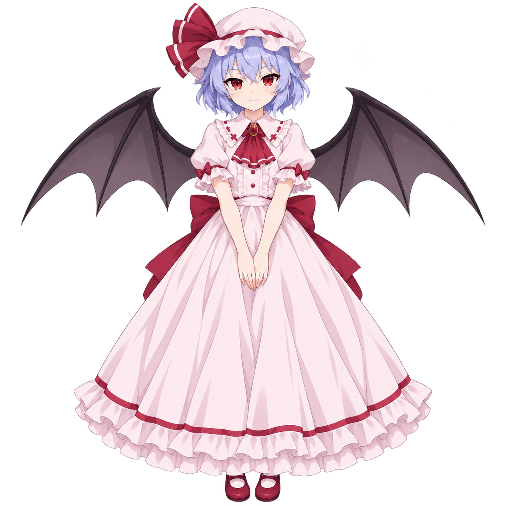

TOUHOU PROJECT · FAN VISUAL NOVEL
초대받지 않은 당신에게, 붉은 밤이 열린다.
붉은 달 아래,
길을 잃다✧
A STRANGER UNDER THE SCARLET MOON
Ⅰ
길을 잘못 들었을 뿐인데,
운명을 다루는 소녀와 마주쳐 버렸다.
홍마관 · 대홀 ／01. 뜻밖의 방문자
레밀리아 스칼렛
REMILIA SCARLETTo be continued...?
A NIGHT TO REMEMBER
✧
어쩌면, 길을 잃은 건 운명이었을지도.